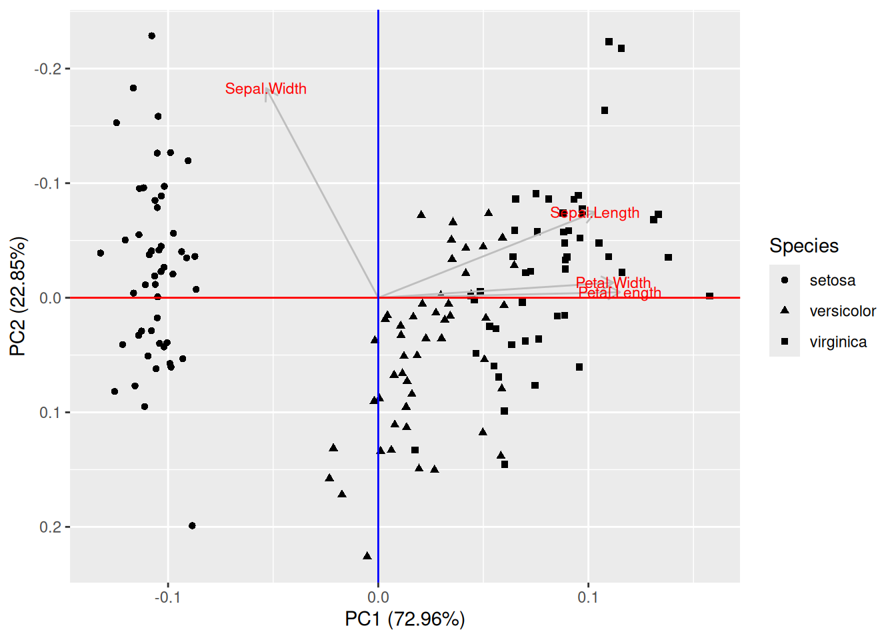
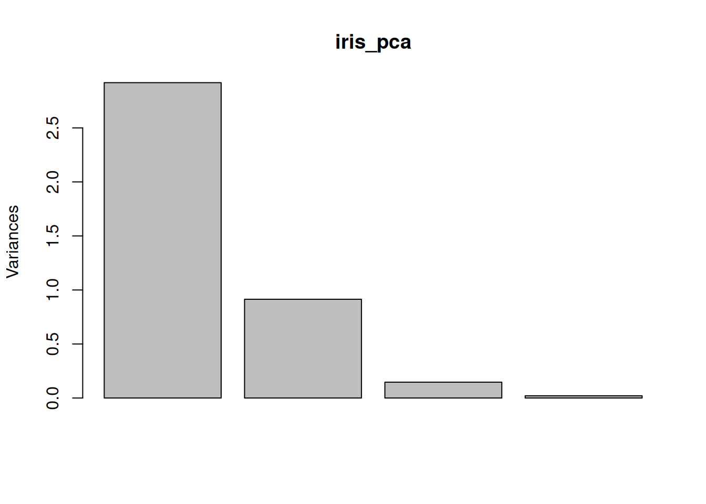

3.6 Експеримент і модель
За визначенням, модель є спрощеним, узагальненим, концептуальним уявленням про явище реального світу. Моделі ніколи не відображають реальність всеохоплююче, адже природні процеси часто є занадто складними системами аби їх вичерпно описати. Моделі часто також мають певні межі, поза якими адекватне узагальнення не є адекватним. Втім, так чи інакше, моделювання є доволі потужним інструментом тестування гіпотез, без якого екологія не може існувати. Навіть якщо на систему впливають сотні різних чинників, комбінований вплив яких є дуже складним і неочікуваним, моделі із лише декількома змінними часто є достатніми для бодай якого та й висновку.
Для побудування моделі необхідні вхідні емпіричні дані, які в ідеальних умовах мають походити із експерименту – контрольоване маніпулювання окремого чинника із супутнім спостереженням за поведінкою системи. В екології угруповань та екосистем проведення контрольованого експерименту не завжди є можливими, адже досліджувані системи є дуже великими, однак це не означає що неможливо зібрати дані. Спостереження також може генерувати корисні дані для моделювання. Процедуру збору даних для побудування моделі називають експериментальним дизайном. Адекватний статистичний аналіз неможливий без адекватного експериментального дизайну, якими би потужними чи модними не були статистичні методи.
Уявіть гіпотезу, що частота співання серед самців зяблика залежить від інтенсивності освітлення навколишнього середовища. Для перевірки цієї гіпотези можна розробити дизайн експерименту. Наприклад, в декількох точках розвісити автоматичні звукові рекордери і датчики освітлення. Яких помилок можна припуститись в цьому дизайні? Можна розвісити датчики настільки близько один до одного, що декілька датчиків будуть одночасно записувати одних і тих же особин: в такому випадку спостереження не будуть незалежними, що суперечитиме припущенням більшості статистичних тестів. Можна розвісити датчики освітлення занадто далеко від рекордерів: тоді спостереження не будуть між собою пов’язані, і всякі результати не матимуть жодного сенсу. Можна повісити датчики в екотопі чи континенті, де зяблики не трапляються… Гаразд, скажімо, експериментальний дизайн адекватний, дані зібрано, і знайдено взаємозв’язок між інтенсивністю освітлення й частотою співання. Знайдений зв’язок являє собою модель. Які її межі? Наприклад, така модель може передбачити, що в умовах нульового освітлення (в печері) варто очікувати негативної частоти співання, а за дуже інтенсивного освітлення, як-то прямо під прожектором, самець буде співати і не затикатись. Обидва передбаченнями є неадекватними. Крім того, чи експеримент врахував всі можливі фактори? Адже поведінка птахів може бути пов’язаною не тільки із освітленням, а й з температурою, наявністю корму, гніздових територій, інших самців, самок тощо, і навіть коли всі ці фактори враховано, то у одного конкретного зяблика може просто не бути настрою співати. Відтак, наша модель не є вичерпною, і питання лише в тому, чи є статистично значуща роль тільки інтенсивності освітлення – а багатьма іншими факторами іноді варто просто знехтувати.
3.6.1 Експериментальний дизайн та псевдореплікація
Уявіть, що ви намагаєтесь дослідити вплив якоїсь хімічної сполуки в ґрунті на процеси росту рослин. Ви відбираєте сотню особин рослин однакового віку та фізіологічного стану із однієї генетичної лінії, висаджуєте кожну рослину в окремий вазон, і виставляєте їх в дві теплиці по п’ятдесят вазонів на теплицю. В одній теплиці ви додаєте однакову кількість хімічної сполуки до кожного вазону, в іншому – ні. За декілька тижнів настає час зібрати результати, і ви обережно вимірюєте морфологічні параметри кожної рослини: ріст, кількість листків, сумарну площу листків, концентрацію хлорофілу, суху біомасу. Прийшов час проводити статистичну обробку даних, ви дбайливо перевірили розподіли кожної змінної, і еврика! Тест Стьюдента показує значущу відмінність між двома групами за всіма параметрами. Виявляється, додавання цієї хімічної сполуки пов’язане із активнішим ростом рослин. Час подавати заявку на патент?
Не так швидко. Який був розмір вашої вибірки? Сотня особин, тож \(n = 100\)? Чи, оскільки і кожній групі було по п’ятдесят особин, то \(n = 50\)? Насправді, \(n = 2\). Можливо, теплиця із кращим ростом рослин стояла в місці із кращою експозицією до сонячних променів, або під нею зарита труба із теплою водою, або її нещодавно відремонтували і там краща термоізоляція, або вона ближче до виходу й аспіранти постійно ходили в неї на перекур. Можливостей є настільки безліч, що всі їх контролювати із таким експериментальним дизайном неможливо. Жахіття змішувальних змінних (confounding variable, таких змінних що впливають і на незалежну, і на залежну змінну, й відтак спричиняють коваріацію між ними без жодного причинно-наслідкового зв’язку) й помилок експериментального дизайну треба завжди мати на увазі. Цей же експеримент став жертвою невдалого дизайну із псевдореплікацією і лише довів ефект теплиці на ріст рослин.
Поняття псевдореплікації (pseudoreplication) ввів Харлберт 1984 року і визначив його як “використання статистичного умовиводу для тестування експериментального ефекту на даних із експериментів де ефект не є реплікованим (хоча вибірки можуть бути реплікованими) або репліканти не є статистично незалежними”. В цьому формулюванні, під “експериментальним ефектом” (treatment) мається на увазі будь-яке спеціальне відношення до зразків, яке є під питанням в експерименті (наприклад, додавання хімікатів), і яке розділяє вибірку на “експеримент” і “контроль”. Вибірки в експериментальній чи/та контрольній групах можуть бути реплікованими (тобто мати більше за один зразок), але репліканти – підмножини вибірки, в яких всі елементи отримують однаковий експериментальний ефект – не обов’язково відповідають цим групам. У прикладі вище реплікантами є не окремі зразки в експериментальній/контрольній групах, а теплиці, адже в межах теплиці експериментальний ефект однаковий. На противагу, якби всі зразки були в одній теплиці, тоді ефект теплиці можна було б елімінувати і кожен окремий вазон майже можна було б вважати реплікантом (майже, адже зразки з однієї теплиці все ще не є статистично незалежними). Ще краще, якщо цього дозволяють ресурси, було б мати множину теплиць в яких випадковим чином розподілені зразки із експериментальної та контрольної груп. В такому випадку ефект теплиць можна було б врахувати в статистичному аналізі, наприклад, за рахунок змішаних моделей (mixed-effect model) із рандомним ефектом теплиці.
Визначення Харлберта робить акцент на статистичній незалежності, якої часто дуже складно досягнути. В ідеальному випадку псевдореплікації можна уникнути коли нема підстав вважати, що одні й ті ж чинники впливають на різні зразки. В екології особливу увагу варто приділяти просторовій та часовій незалежності. Якщо дані зібрані із різних просторових точок, можна виправдано очікувати що близькі між собою точки будуть менш незалежними одна від одної порівняно із далекими точками (наприклад, вимірювання вмісту газів в межах міста не будуть незалежними, бо всі зразки є під впливом одного мікроклімату). В таких випадках варто зважати на просторову автокореляцію (spatial autocorrelation) – залежність точок даних від їх взаємного розміщення в просторі – і використовувати специфічні методи аналізу що враховують цю автокореляцію36. Подібно, вимірювання змінних в часі також не є незалежними, адже значення змінної в момент часу залежить від значень цієї змінної в інші моменти часу (наприклад, середня добова температура сьогодні залежить від температури вчора – набагато ймовірніше що між цими значеннями незначна різниця, адже різкі перепади температури є відносно рідкісним явищем). Будь-які змінні в часі варто аналізувати за допомогою методів часових серій (time series). Варто зважати, що будь-який натяк на відсутність статистичної незалежності у вибірці зводить нанівець використання більшості класичних статистичних тестів, а відтак їх результати не є достовірними.
3.6.2 Дані та проблема моделювання
У житті кожного польовика наступає такий момент, коли стадія планування дослідження (= розробки експериментального дизайну) із усіма врахованими застереженнями щодо псевдореплікації та незалежності спостережень давно позаду, труднощі польових досліджень подолані, все, що могло піти не так, пішло не так і ці помилки виправлені, і можна гордо сказати що збір даних закінчено. В цей момент ейфорія доконаності перспективи прокидатись о 5 ранку і лізти в, як воно завжди буває, найнеочікуваніші місця по об’єкт досліджень швидко заміщується жахом від усвідомлення того, що тепер всі зібрані дані пора би аналізувати. Статистичних тестів існує безліч, і до одного набору даних можна застосувати багато різних методів, більшість із яких видадуть якийсь результат. Тож який підхід обрати? Цей підрозділ не дасть відповіді на це питання, однак може підштовхнути до перших кроків.
Однією ремаркою буде формат даних. Часто на момент оцифровування польових нотаток з’являється спокуса зробити нудну таблицю більш візуально привабливою (наприклад, додати заголовок, виділити клітинки обабіч для нотаток, додати відсотки чи одиниці вимірювання коло значень, вписати декілька значень в одну клітинку тощо). Такий підхід, звісно, дещо спрощує і без того нудний процес оцифровування, однак стає помітною проблемою коли настає час ці дані аналізувати. Справа в тім, що аналіз оперуватиме змінними (variables) – послідовностями значень певного параметру, кожне з яких відповідає окремому спостереженню. Відтак, колонки в таблицях із даними повинні відповідати різним змінним, рядки – окремим спостереженням або вимірюванням, а в одній клітинці має бути лише одне значення. Такий підхід дехто називає “охайними даними” (tidy data, Wickham & Grolemund (2017)), адже він дозволяє зберігати дані в такому вигляді, що їх одразу можна аналізувати (Рис. 3.14). Завжди варто мати на увазі, що колись ці дані доведеться зберегти у форматі *.csv, який являє собою лишень текст, де рядки таблиці записані рядками тексту, а значення клітинок розділені комами. Відтак, наприклад, варто уникати використання коми в клітинках (що ніколи не знадобиться якщо в клітинці тільки одне значення), а в якості десяткового розділювача використовувати крапку (“одна десята” має бути “0.1”, а не “0,1” – програма на кшталт R просто не зрозуміє що то за кома).
![Уявімо дослідження ефекту структури лісу на населення птахів. Приклад **(А)** відображає дещо невдалий формат даних: шапка документу займає декілька рядків (їх все одно доведеться видалити для подальшої обробки даних, тож пояснення для значень змінних варто тримати в окремому файлі, наприклад, в документації до набору даних), дата й час не однаковому форматі (їх можна вносити як текст аби уникнути автоматичного форматування, а на етапі роботи з даними можна використати функції бібліотеки `lubridate` для R), температура й хмарність є двома різними змінними із різними одиницями вимірювання (додавання одиниць вимірювання в клітинки перетворить їх вміст в текст, а додавання коми в клітинках стане на заваді адекватного зчитування даних у форматі *.csv), колонка дерев має нефіксовану кількість значень в кожній клітинці. Натомість, ті ж дані можна оцифрувати в межах парадигми охайних даних **(В)**, при чому декількома способами. Зображений тут спосіб не викличе необхідності перемикати налаштування мови під час аналізу даних, адже назви колонок прописані англійською мовою, а масив даних легко може бути імпортованим в R.](images/tidydata.png)
Рис. 3.14: Уявімо дослідження ефекту структури лісу на населення птахів. Приклад (А) відображає дещо невдалий формат даних: шапка документу займає декілька рядків (їх все одно доведеться видалити для подальшої обробки даних, тож пояснення для значень змінних варто тримати в окремому файлі, наприклад, в документації до набору даних), дата й час не однаковому форматі (їх можна вносити як текст аби уникнути автоматичного форматування, а на етапі роботи з даними можна використати функції бібліотеки lubridate для R), температура й хмарність є двома різними змінними із різними одиницями вимірювання (додавання одиниць вимірювання в клітинки перетворить їх вміст в текст, а додавання коми в клітинках стане на заваді адекватного зчитування даних у форматі *.csv), колонка дерев має нефіксовану кількість значень в кожній клітинці. Натомість, ті ж дані можна оцифрувати в межах парадигми охайних даних (В), при чому декількома способами. Зображений тут спосіб не викличе необхідності перемикати налаштування мови під час аналізу даних, адже назви колонок прописані англійською мовою, а масив даних легко може бути імпортованим в R.
Коли говорити про змінні, то дані можуть мати один із багатьох можливих форматів. Одна змінна може мати лише один формат даних, і, скоріш за все, це буде один із наступних:
логічні дані (Boolean), які приймають одне із двох можливих значень (1/0, правда/неправда, True/False);
числові дані (numeric), що можуть включати як континуальні значення (double/float, наприклад, вага, зріст тощо), так і дискретні числа (integer, наприклад, кількість особин);
текст (character), будь-який набір символів який має принаймні один символ, що не є числом (власне, чому не варто додавати одиниці вимірювання до значень, які за своєю природою є числом);
категорійні дані (factor), в яких одне спостереження може приймати одне значення із певного скінченного набору можливих значень (наприклад, вид, стадія життєвого циклу тощо);
дата/час (date/time) є особливим форматом даних із яким треба бути дуже обережним, адже форматування іноді може дивно поводитись (наприклад, автоматично переводитись в дискретну кількість секунд із якогось моменту типу 1970-01-01 00:00:00), а неповні дані бувають неочевидними (наприклад, якщо надано тільки місяць і день, то не завжди вдається вгадати рік); найповнішим форматом є “YYYY-MM-DDThh:mm:ss+hh:mm”, наприклад, “2024-10-15T22:43:25-04:00” каже “рік 2024, місяць 10, день 15, година 22, хвилина 43, секунда 25, часовий пояс мінус 4 години від стандартного часу GMT”. Часовий пояс варто наводити, адже в багатьох локаціях наявна змінна літнього і зимового часу; альтернативно, можна наводити час за всесвітнім координованим часом (GMT, позначається як “Z” від Zulu), як-то для попереднього прикладу “2024-10-16T02:43:25Z”.
Тепер нарешті погляньмо на структуру статистичної моделі. Вся суть моделювання полягає в тому, що дослідник намагається змоделювати певну залежну змінну (dependent variable) як функцію однією або декількох незалежних змінних, або предикторів (predictor). Для зручності модель можна записати формулою, яка в найпростішій ситуації виглядатиме як
\[y \sim f(x) \Longleftrightarrow y_i = f(x_i) + \epsilon_i\]
де ми намагаємось змоделювати кожне спостереження залежної змінної \(y\) як функцію змінної \(x\) із врахуванням якоїсь статистичної похибки \(\epsilon\).
Відповідно, проблема аналізу даних може становити або проблему регресії (regression) якщо залежна змінна має логічні або числові дані, або проблему класифікації (classification) якщо залежна змінна є категорійною.
3.6.2.1 Регресія
Регресія в найпростішому вигляді відповідає побудуванню прямої лінії в двовимірних координатах (Рис. 3.2). Таку лінію можна уявити як залежну змінну \(y\) у вигляді функції предиктора \(x\):
\[y \sim x \Longleftrightarrow y_i = \beta_0 + \beta_1 \cdot x_i + \epsilon_i\]
і в такому разі оцінка коефіцієнтів регресії \(\beta_0\) (інтерцепт, intercept) та \(\beta_1\) (нахил, slope) надасть уявлення про залежність між змінними: якщо \(\beta_1 > 0\), то \(y\) збільшується зі збільшенням \(x\), якщо \(\beta_1 < 0\) – то існує негативний взаємозв’язок, а статистичне тестування можна зав’язати на нульовій гіпотезі що \(\beta_1 = 0\).
Корисною особливістю лінійної регресії є те, що її можна використати і для моделювання нелінійних залежностей. Наприклад, якщо ми введемо нову змінну \(u\), яка є нелінійною функцією \(x\), скажімо, \(u = x^2\), то нічого не заважає побудувати лінійну регресію
\[y \sim u \Longleftrightarrow y_i = \beta_0 + \beta_1 \cdot u_i + \epsilon_i\]
хоча варто мати на увазі, що поліноміальні (polynomial) функції є складнішими, тож, наприклад, моделювання поліноміального зв’язку третього порядку матиме вигляд
\[y \sim \text{poly}(x, 3) \Longleftrightarrow y_i = \beta_0 + \beta_1 \cdot x_i + \beta_2 \cdot x_i^2 + \beta_3 \cdot x_i^3 + \epsilon_i\]
Крім того, можливо також не обмежувати себе одним предиктором і моделювати залежну змінну за допомогою декількох предикторів. Така регресія зветься множинною (multiple regression) і дозволяє оцінити ефект (=коефіцієнт) для кожного предиктора окремо якщо між предикикторами немає взаємної кореляції (multicollinearity):
\[y \sim a + b + c \Longleftrightarrow y_i = \beta_0 + \beta_1 \cdot a_i + \beta_2 \cdot b_i + \beta_3 \cdot c_i + \epsilon_i\]
Іншими двома важливими припущеннями базових методів регресії є те, що в моделі відсутня гетероскедастичність (heteroscedasticity) – варіація залежної змінної повинна бути незалежною від предикторів, – і те, що розподіл помилки \(\epsilon\) є нормальним. Простіші регресійні підходи застосовують метод максимальної правдоподібності для оцінки таких значень коефіцієнтів регресії, за яких сума квадратів помилок \(\epsilon_i\) є мінімальною, і відтак метод іноді називають простою регресією найменших квадратів (ordinary least squares regression, OLS regression). Іноді залежна змінна є не континуальною, а, скажімо, логічною (тобто 0/1) або має один із дискретних розподілів (наприклад, Пуасона). В таких випадках в нагоді стають узагальнені лінійні моделі (generalized linear models, GLM). Існують також методи, які дозволяють будувати криві, які локально підбудовують себе під точки спостережень, однак не мають чітко визначених параметрів і використовуються переважно для візуалізації: узагальнені додатні моделі (generalized additive models, GAM) та локально зважені поліноміальні моделі (locally estimated scatterplot smoothing, local regression, LOESS).
Якщо ж предиктором є не континуальна змінна, а категорійний фактор, така модель являтиме приклад дисперсійного аналізу, або аналіз варіації (analysis of variance, ANOVA). ANOVA розділяє залежну змінну на групи, що відповідають різним рівням фактора предиктора, і перевірка статистичної гіпотези зводиться до того, чи варіація між групами є більшою за варіацію в межах груп. Якщо так, то це лише каже що принаймні одна група має значуще відмінні значення залежної змінної від інших груп, однак не каже яка саме – для цього часто застосовують post hoc тест Тюкі (Tukey Honestly Significant Difference test, Tukey HSD). Варто пам’ятати, що технічно ANOVA є окремим випадком OLS-регресії, адже тестування гіпотез в регресії використовує то й же механізм, що аналіз варіації (тест Фішера), а фактор можна зобразити у вигляді декількох бінарних колонок, які відповідають рівням фактору (див. коментар щодо типів кодування аналізу варіації).
Аби проілюструвати регресію в R, корисним набором даних може бути iris із стандартних супутній даних в пакеті datasets. В цьому наборі даних наведено проміри в см чотирьох морфологічних ознак квіток: довжина (*.Length) та ширина (*.Width) чашолистків (Sepal.*) та пелюсток (Petal.*), виміряні в 50 особин кожного з трьох видів півників (Iris setosa, I. versicolor, та I. virginica). Відтак, дані мають 150 рядків та 5 колонок:
## Sepal.Length Sepal.Width Petal.Length Petal.Width Species
## 1 5.1 3.5 1.4 0.2 setosa
## 2 4.9 3.0 1.4 0.2 setosa
## 3 4.7 3.2 1.3 0.2 setosa
## 4 4.6 3.1 1.5 0.2 setosa
## 5 5.0 3.6 1.4 0.2 setosa
## 6 5.4 3.9 1.7 0.4 setosa## [1] 150 5Побудуймо просту лінійну регресію, в якій Sepal.Length є функцією від Petal.Length:
Code
##
## Call:
## lm(formula = Sepal.Length ~ Petal.Length, data = iris)
##
## Residuals:
## Min 1Q Median 3Q Max
## -1.24675 -0.29657 -0.01515 0.27676 1.00269
##
## Coefficients:
## Estimate Std. Error t value Pr(>|t|)
## (Intercept) 4.30660 0.07839 54.94 <2e-16 ***
## Petal.Length 0.40892 0.01889 21.65 <2e-16 ***
## ---
## Signif. codes: 0 '***' 0.001 '**' 0.01 '*' 0.05 '.' 0.1 ' ' 1
##
## Residual standard error: 0.4071 on 148 degrees of freedom
## Multiple R-squared: 0.76, Adjusted R-squared: 0.7583
## F-statistic: 468.6 on 1 and 148 DF, p-value: < 2.2e-16Виглядає, що регресію можна описати лінією \(y = 4.307 + 0.409 \cdot x\). Перевірмо, наскільки добре це описує дані:
Code

Подібним чином можна побудувати й множинну регресію (напр., lm(Sepal.Length ~ Petal.Length + Petal.Width, data = iris)), й усіляко досліджувати лінійні та криволінійні взаємозалежності. Завжди варто мати на увазі, втім, що наявність статистично значущих зв’язків не передбачає причинно-наслідкових зв’язків. Наприклад, чи можна справді вважати що довжина пелюсток визначає довжину чашолистків? Натомість, мабуть, біологічно обґрунтованим стало би припущення, що на обидві ці морфологічні ознаки впливають одні й ті ж довкіллєві чи генетичні фактори37.
3.6.2.2 Класифікація
Що ж робити, якщо залежна змінна в моделі є не континуальною, а фактором? Наприклад, чи можна за комбінацією морфологічних промірів квітки передбачити вид півників? Таке завдання відповідатиме проблемі класифікації.
Класифікаційна модель отримує на вхід набір дескрипторів репліканта (рядку даних), і на підставі цих даних намагається оцінити ймовірності того, що об’єкт належить до певного класу, наприклад, для трьох видів півників,
\[ \begin{cases} P(y_i \in \text{setosa}) = f(x_i) \\ P(y_i \in \text{versicolor}) = f(x_i) \\ P(y_i \in \text{virginica}) = f(x_i) \end{cases} \]
При чому варто очікувати, що \(P(y_i \in \text{setosa}) + P(y_i \in \text{versicolor}) + P(y_i \in \text{virginica}) = 1\).
Існує чимало алгоритмів класифікації, і не всі з них напряму обчислюють ймовірності, але ідея подібна: для кожного рядку даних алгоритм намагається вгадати клас спостереження. Спробуймо використати один із найбільш класичних алгоритмів, k-найближчих сусідів (k-nearest neighbors, KNN), для класифікації півників. Механізм алгоритму дуже простий: для кожного нового спостереження, KNN дивиться на найближчі \(k\) спостережень і визначає клас нового спостереження як найбільш поширений серед цих \(k\) спостережень. Наприклад, якщо \(k=3\), і ми намагаємось вгадати клас для спостереження, найближчі сусіди якого є двома setosa і одним virginica, то нове спостереження визначимо як setosa.
KNN є прикладом алгоритму машинного навчання із учителем (supervised machine learning). Такі алгоритми вимагають вхідного, навчального, набору даних із відомою класифікацією (тому й називаються supervised), і очікують нових точок даних для застосування щойно навченого класифікатора. Наприклад, для даних iris, де маємо 150 спостережень, найбільш доцільним питанням із використанням KNN було би “от ми маємо нове спостереження із промірами пелюсток та чашолистиків, але ми не знаємо виду – який це вид?” Тоді KNN пошукає найближчих сусідів і видасть результат.
Вибір значення \(k\) є наріжним каменем використання цього методу, адже невідомо скільки найближчих сусідів є забагато чи замало для ефективного алгоритму. Значення \(k=3\) і \(k=5\) є доволі поширеними, але довільними. Для виправданого вибору цього параметру, варто проводити валідацію класифікатора, про що поговоримо пізніше.
Іншим застосуванням класифікатора може бути поділ простору параметрів. Справа в тім, що один класифікатор, навчений на скінченній кількості спостережень, теоретично можна використати для класифікації незліченної кількості точок, а відтак і прокласифікувати цілий простір замість декількох точок. Наприклад, погляньмо на двовимірний простір промірів пелюсток півників.
Code

Code
# побудуємо KNN класифікатор із k = 5
# library(caret)
fit_iris2 <- caret::train(Species ~ Petal.Width + Petal.Length,
data = iris,
method = "knn",
tuneGrid = data.frame(k = 5))
# генерація точок в просторі параметру
xg <- seq(min(iris$Petal.Width), max(iris$Petal.Width), length.out = 100)
yg <- seq(min(iris$Petal.Length), max(iris$Petal.Length), length.out = 100)
xyg <- expand.grid(xg, yg)
colnames(xyg) <- c("Petal.Width", "Petal.Length")
# застосуємо і запишемо класифікацію нових точок
xyg$Species <- predict(fit_iris2, xyg)
# промалюємо простір
ggplot() +
geom_raster(data = xyg,
aes(x = Petal.Width, y = Petal.Length, fill = Species),
alpha = 0.5) +
geom_point(data = iris,
aes(x = Petal.Width, y = Petal.Length, color = Species))Тобто будь-яка нова точка спостережень в червоній зоні буде класифікована як setosa, адже для будь-якої точки в цій зоні більшість найближчих 5 сусідів із вхідного набору даних належать до цього виду; всі нові точки в зеленій зоні будуть класифіковані як versicolor, а в блакитній – як virginica. Цей приклад використав лише два параметри (Petal.Width і Petal.Length), однак KNN може працювати із будь-якою кількістю параметрів (навіть лише з одним, якщо треба).
Цікаво, що KNN можна застосувати і до проблеми регресії, якщо залежна змінна є континуальною. В такому випадку, класифікатор шукатиме середнє значення (або іншу статистику) для \(k\) найближчих сусідів.
Загалом же, існує чимало інших алгоритмів класифікації. Деякі із них кластеризують точки без вхідних даних щодо класів спостережень і є, відтак, алгоритмами машинного навчання без учителя (unsupervised machine learning) – наприклад, метод K-середніх (K-means), який ітеративно шукає найкращий поділ хмари точок на \(K\) кластерів. Тема машинного навчання є дуже популярною, й, відтак, нові алгоритми з’являються доволі часто.
3.6.3 Парсимонійна модель та вибір моделі
Ми неодноразово вже проговорили, що системи в екології бувають дуже складними, мають безліч факторів що впливають один на одного та на залежні змінні, в яких ми зацікавлені. Давайте поговоримо про це ще раз, цього разу зі згадкою про класичний філософський принцип бритви Оккама: не варто ускладнювати припущення без необхідності. Коли еколог намагається описати систему дослідження у вигляді статистичної моделі, варто намагатись зробити таку модель настільки простою, наскільки це можливо без втрати змісту моделі. Пошук найкращої моделі, відтак, виглядатиме як пошук балансу між рівнем складності (скільки параметрів чи факторів можна з неї викинути?) та передбачувальної здатності (якщо модель занадто проста, чи вона хоч щось може пояснити?) моделі, і модель із найкращим таким балансом називають парсимонійною (parsimonious).
Загалом, це все, звісно, прекрасно, але то лише філософія. Чи можна принцип Оккама застосувати на практиці? Для цього необхідно було би мати якісь математичні способи оцінити складність моделі, її передбачувальну здатність, та баланс між ними. Оскільки ми вже знаємо, що статистична модель може мати безліч параметрів (як-то предиктори в множинній регресії чи класифікаторі, кожен зі своїм коефіцієнтом), кількість змінних в моделі (\(k\)) може виступити пристойним оцінщиком ступеню складності. Водночас, оцінка лог-правдоподібності моделі (\(\ln\mathcal{L}\)) надає змогу оцінити наскільки добре модель описує дані, відтак виступає гарним оцінщиком передбачувальної здатності. Існує два загальноприйнятих шляхів об’єднати ці два значення в оцінку “парсимонійності” моделі:
інформаційний критерій Акайке (Akaike information criterion, AIC): \(2k-2\ln\mathcal{L}\),
інформаційний критерій Баєса (Bayesian information criterion, BIC): \(\ln (n) \cdot k - 2\ln\mathcal{L}\).
В обох випадках, ліва частина формули визначає штраф за складність моделі, виражену через кількість змінних \(k\). Єдина різниця між цими двома критеріями – це те, що BIC зважує складність моделі на логарифм розміру вибірки (\(n\)), в той час як AIC має фіксовану вагу (\(2\)) для кожної змінної. BIC є не надто поширеним в екології (на відміну від біоінформатики), і більшість експериментальних робіт використовують AIC. Це не лише забаганка моди в наукових дисциплінах: справа в тім, що у великих наборах даних (\(n >> k\), тисячі й мільйони спостережень) AIC недостатньо сильно штрафує за складність моделі, в той час будь-яка, навіть найгірша, модель підбудується до великого набору даних. Відтак, BIC є більш прийнятним вибором для роботи із великими наборами даних, а AIC – для локальних досліджень (Aho et al. 2014, Brewer et al. 2016).
Формули AIC та BIC є доволі простими, і з них нескладно побачити що інформаційний критерій матиме високе значення для складних моделей (\(k >> 1\)) та низьких правдоподібностей (\(\mathcal{L} \rightarrow 0 \Rightarrow \ln (\mathcal{L}) \rightarrow - \infty\)), але матиме низьке значення для простих моделей (\(k \rightarrow 1\)) із високою правдоподібністю (\(\mathcal{L} \rightarrow 1 \Rightarrow \ln (\mathcal{L}) \rightarrow 0\)). Тут і криється один момент щодо інформаційного підходу: значення інформаційного критерія є безрозмірними, і самі по собі нічого не кажуть про парсимонійність моделі. Скажімо, побудована модель має AIC = -7653.783, і що з того? Натомість, інформаційні критерії використовують для порівняння моделей, для пошуку найбільш парсимонійної моделі із набору моделей-кандидаток.
Процедура вибору моделі (model selection) передбачає набір моделей-кандидаток, в яких залежна змінна є спільною, однак предиктори відрізняються. Наприклад, в множинній регресії можливо побудувати чимало комбінацій взаємодій між предикторами, наприклад, із двома предикторами:
y ~ a, \(y_i = \beta_0 + \beta_1 \cdot a_i + \epsilon_i\),y ~ b, \(y_i = \beta_0 + \beta_2 \cdot b_i + \epsilon_i\),y ~ a + b, \(y_i = \beta_0 + \beta_3 \cdot a_i + \beta_4 \cdot b_i + \epsilon_i\),y ~ a:b, \(y_i = \beta_0 + \beta_5 \cdot (a_i \cdot b_i) + \epsilon_i\),y ~ a*b, тотожно доy ~ a + b + a:b, \(y_i = \beta_0 + \beta_6 \cdot a_i + \beta_7 \cdot b_i + \beta_8 \cdot (a_i \cdot b_i) + \epsilon_i\).
Нескладно уявити, наскільки багато комбінацій можна побудувати для регресії із багатьма предикторами. Вибір найкращої моделі, в такому випадку, дозволяє обрати найкращу комбінацію предикторів. Звісно, для пошуку найкращої моделі можна скористатися покроковою регресією (stepwise regression), коли ми або починаємо з найпростішої моделі й додаємо більше й більше змінних (прямий добір, forward selection), або починаємо із найскладнішої моделі і почергово елімінуємо з неї змінні (зворотній добір, backward selection), і все поки не отримаємо модель з такою комбінацією змінних, яка найкраще описує дані. Такий підхід досі використовують, однак від нього варто відмовитись через упередженість й множинне тестування гіпотез (Whittingham et al. 2006). Інформаційний підхід є адекватнішою альтернативою алгоритмам, які генерують безліч моделей-кандидаток, однак варто мати на увазі одне правило: всі моделі-кандидатки мають відповідати обдуманому, реалістичному сценарію аби уникнути використання множини моделей із абсурдними комбінаціями змінних. Використання безлічі необґрунтованих моделей або всіх можливих комбінацій змінних є прикладами просіювання даних (data dredging) – небажаної тактики статистичного аналізу, яка часто закінчується знаходженням абсурдних, проте статистично значущих закономірностей (Anderson et al. 2000).
І от в межах інформаційного підходу (informational approach, термін для використання АІС або ВІС) ми маємо якийсь набір моделей. Тепер час розрахувати обраний інформаційний критерій (скоріш за все, АІС) для кожної моделі окремо, і перелічити моделі в порядку зростання АІС. Модель із найнижчим значенням АІС можна вважати найближчою до парсимонійної38, а всі моделі в яких значення АІС не є більшими за дві одиниці (пам’ятаймо, що АІС та ВІС не мають одиниць вимірювання) можна вважати не набагато гіршими і теж врахувати. Ці “найкращі” моделі тепер можна сміливо використати для висновків, наприклад, із тестування гіпотез щодо коефіцієнтів регресії в моделі. Для подачі результатів аналізу в межах інформаційного підходу варто подавати формулу моделі, кількість змінних (\(k\)), лог-правдоподібність (\(\ln \mathcal{L}\)), значення АІС (чи ВІС), та різницю між АІС моделі та найнижчим значенням АІС в наборі кандидатів (ΔAIC). Часто моделі із \(\Delta \text{AIC} \leq 2\) виділяють в таблицях жирним шрифтом.
Інколи в таблицях AIC можна також побачити колонку для ваги моделі (weight): моделі із найнижчими значеннями AIC мають більшу вагу, і сума ваг всіх моделей дорівнює одиниці. Ці ваги використовують для техніки усереднення моделей (model averaging): скажімо, ви зацікавлені в значення коефіцієнту регресії для певного предиктора, однак, в кожній окремій моделі коефіцієнт для одного й того ж предиктора буде відрізнятись. Усереднення моделей полягає у знаходженні середнього значення предиктора, зваженого на інформаційний критерій моделі (див. Dormann et al. 2018 із блогом від авторів). Підхід зважування моделей видається дуже зручним для знаходження усередненої важливості предикторів, однак цей підхід не виключає помилок умовиводу, пов’язаних із порушеннями передбачень моделей (див. Cade 2015 із пов’язаним блогом).
3.6.4 Багатовимірна статистика
Як би не хотілося уникнути говорити занадто багато про статистику, ще однією темою, котру треба зачепити, є багатовимірність даних. Це може звучати дуже абстрактно, але у всякому аналізі трапляється проблема багатовимірності, адже кожна змінна є одним окремим виміром даних. Відтак, наприклад, знайомий вже набір даних про квітки півників має аж п’ять вимірів: Sepal.Length, Sepal.Width, Petal.Length, Petal.Width, та Species. В польових дослідженнях, скоріш за все, досліднику доведеться збирати проміри ще більшої кількості параметрів.
Для усвідомлення багатовимірності допомагає згадування теореми Піфагора й Евклідової дистанції. Звісно, твердження “квадрат гіпотенузи дорівнює сумі квадратів катетів” може звучати не надто переконливо. Уявіть, однак, одновимірний простір. Якщо в одному вимірі \(x\) ми маємо дві точки \(a = (x_a)\) та \(b = (x_b)\), то дистанцію між ними можна нескладно обчислити як абсолютну різницю між їх координатами, \(d_{a, b} = |x_a - x_b|\). Ну, скажімо, добре. Як щодо двовимірного простору? Тут допоможе та ж теорема Піфагора коли уявити ці дві точки \(a = (x_a, y_a)\) і \(b = (x_b, y_b)\) як два кути прямокутного трикутника, і тоді дистанція між ними дорівнюватиме гіпотенузі цього трикутника: \(d_{a, b} = \sqrt{(x_a - x_b)^2 + (y_a - y_b)^2}\). Повертаючись до одновимірного простору, абсолютну різницю можна дуже легко зобразити як \(d_{a,b} = \sqrt{(x_a - x_b)^2}\). Цю формулу можна генералізувати і для тривимірного простору, для \(a = (x_a, y_a, z_a)\) та \(b = (x_b, y_b, z_b)\), \(d_{a, b} = \sqrt{(x_a - x_b)^2 + (y_a - y_b)^2 + (z_a - z_b)^2}\). Краса Евклідової дистанції в тому, що навіть якщо ми можемо уявити одно-, дво-, і три-вимірний простір, але не чотири- і більш-вимірний, то обчислення дистанції все одно працюватиме в скількох завгодно вимірах. Відтак, ми можемо обчислити дистанцію між двома точками (= спостереженнями) у скількох-завгодно-вимірному (= кількість змінних для спостереження) просторі. Для точок \(p, q\) в \(i = 1, 2, \cdots, n\) вимірах, Евклідова дистанція становитиме \(d(p, q) = \sqrt{\sum \limits_{i=1}^{n}(p_i - q_i)^2}\).
Отже, багатовимірність даних всього лише відповідає кількості змінних в наборі даних. В попередньому розділі ми побачили, що існує спосіб вибрати лише обмежений набір змінних, який можна використати для побудови цілком пристойної моделі. Але що якщо ми вважаємо що всі змінні є важливими, і жодну не можна просто так взяти і викинути? Для таких випадків існують методи, що дозволяють трансформувати багато змінних в декілька – методи ординації (ordination).
3.6.4.1 Метод головних компонент
Найбільш базовим і поширеним методом ординації є метод головних компонент (principal component analysis, PCA). Суть РСА полягає в перетворенні набору вхідних змінних \(X = \{x_1, x_2, \cdots, x_n\}\) в таку їх лінійну комбінацію \(Z = \{z_1, z_2, \cdots, z_n\}\) де \(z_i = \phi_{i,1} \cdot x_1 + \phi_{i,2} \cdot x_2 + \cdots + \phi_{i,n} \cdot x_n\), а коваріація між вихідними змінними \(\text{Cov}(z_i, z_j) \rightarrow 0\). Завдання цього методу полягає в знаходженні коефіцієнтів \(\phi_{i, j}\) для кожної змінної \(z_i\) та \(x_j\). Вихідні змінні \(Z = \{z_1, z_2, \cdots, z_n\}\) називають головними компонентами.
Хоча й методи ординації іноді й називають також методами зменшення розмірності даних, це є правдою лише частково: справа в тім, що РСА повертає стільки ж вихідних головних компонент, скільки було вхідних змінних. Корисними властивостями головних компонент є те, що, на відміну від вхідних змінних у більшості випадків, вони є ортогональними – між головними компонентами відсутня кореляція. Іншою корисною властивістю є те, що хоча й сумарна варіація головних компонент дорівнює сумарній варіації вхідних змінних, варіація невідворотно зменшується із порядком головної компоненти. Відтак, найвища варіація спостерігатиметься в першій головній компоненті \(z_1\), трошки менше варіації – в другій головній компоненті \(z_2\), і так далі до найнижчої варіації в останній головній компоненті \(z_n\). Це дозволяє охопити якомога більше варіації вихідних даних (в яких може бути дуже багато змінних) у всього лише декількох перших головних компонент.
Аби зрозуміти логіку РСА, можна уявити що цей метод дозволяє поглянути на багатовимірні дані із найбільш інформативного кута. Наприклад, у наборі даних про квітки півників є чотири континуальні змінні:
## Sepal.Length Sepal.Width Petal.Length Petal.Width Species
## 1 5.1 3.5 1.4 0.2 setosa
## 2 4.9 3.0 1.4 0.2 setosa
## 3 4.7 3.2 1.3 0.2 setosa
## 4 4.6 3.1 1.5 0.2 setosa
## 5 5.0 3.6 1.4 0.2 setosa
## 6 5.4 3.9 1.7 0.4 setosaЯк би ми не намагались, побудувати чотиривимірний графік є трохи поза межами нашого розуміння дійсності. Звісно, можна подивитись на дані в різних комбінаціях двовимірних графіків:
Code
library(ggpubr) # бібліотека для комбінування графіків в один рисунок
ggarrange(
iris %>%
ggplot(aes(x = Sepal.Length, y = Sepal.Width, color = Species)) +
geom_point() + theme(legend.position="none"),
iris %>%
ggplot(aes(x = Sepal.Length, y = Petal.Length, color = Species)) +
geom_point() + theme(legend.position="none"),
iris %>%
ggplot(aes(x = Sepal.Length, y = Petal.Width, color = Species)) +
geom_point() + theme(legend.position="none"),
iris %>%
ggplot(aes(x = Sepal.Width, y = Petal.Length, color = Species)) +
geom_point() + theme(legend.position="none"),
iris %>%
ggplot(aes(x = Sepal.Width, y = Petal.Width, color = Species)) +
geom_point() + theme(legend.position="none"),
iris %>%
ggplot(aes(x = Petal.Length, y = Petal.Width, color = Species)) +
geom_point() + theme(legend.position="none"),
ncol = 3, nrow = 2
)
Однак, як перебудувати виміри таким чином, аби поглянути на цю чотиривимірну хмару точок під таким кутом, за якого ми побачимо найбільше варіації? Тут на допомогу і приходить РСА. В наступному коді ми виконуємо декілька кроків:
застосовуємо z-стандартизацію аби головні компоненти не були упереджені на користь змінних із високою варіацією39;
застосовуємо метод головних компонент (функція
prcomp);малюємо хмару точок в просторі
Petal.Length-Sepal.Length(ці змінні мають найбільшу варіацію до стандартизації) і осі перших двох компонент – таке зображення РСА не є типовим, але є сподівання що воно допоможе зрозуміти що відбувається, і як перші дві головні компоненти є ортогональними, хоча й кут між ними не виглядає на 90° (насправді він становить 90°, просто ми дивимось на двовимірну проекцію чотиривимірного простору);малюємо цю ж хмару точок в проекції перших двох компонент, у випадку чого класично осі позначають як номер головної компоненти (Principal Component, PC) і відсоток сумарної варіації даних, що припадає на ці головні компоненти;
дивимось на розподіл варіації даних за головними компонентами – скільки інформації ми змогли захопити в перших двох компонентах?
Code
# Крок 1: z-стандартизація
iris_scaled <- scale(iris[, 1:4]) %>% as.data.frame()
# тепер у кожної змінної середнє дорівнює 0, sd = 1
# додамо змінну з видом з ориінального набору даних
iris_scaled$species <- iris$Species
# Крок 2: РСА
iris_pca <- prcomp(iris_scaled[,1:4])
# Крок 3: проекція оригінальних стандартизованих даних
ggplot() +
geom_point(aes(x = Petal.Length, y = Sepal.Length, shape = species), data = iris_scaled) +
geom_abline(slope = iris_pca$rotation["Sepal.Length", "PC1"]/iris_pca$rotation["Petal.Length", "PC1"],
color = "red", alpha = 0.7, lty = 2) +
geom_abline(slope = iris_pca$rotation["Sepal.Length", "PC2"]/iris_pca$rotation["Petal.Length", "PC2"],
color = "blue", alpha = 0.7, lty = 2)
Code
## Warning: `aes_string()` was deprecated in ggplot2 3.0.0.
## ℹ Please use tidy evaluation idioms with `aes()`.
## ℹ See also `vignette("ggplot2-in-packages")` for more
## information.
## ℹ The deprecated feature was likely used in the ggfortify
## package.
## Please report the issue at
## <https://github.com/sinhrks/ggfortify/issues>.
## This warning is displayed once every 8 hours.
## Call `lifecycle::last_lifecycle_warnings()` to see where this
## warning was generated.
Code

Code
## [1] 53.52972 83.48653 95.49021 100.00000Отак ми й змогли зобразити чотиривимірні дані в двох вимірах, при чому ми бачимо 83.49% варіації всіх даних із використанням тільки першої й другої головних компонент.
Одним практичним застереженням до використання РСА є необхідність уникати лінійних комбінацій змінних у вхідних даних (наприклад, якщо одна змінна є сумою двох інших змінних). Це пов’язано із тим, що під капотом РСА – чутливі підходи лінійної алгебри, і наявність лінійних комбінацій призведе до виродження матриць. Ба більше, необхідно також зважати на чутливість РСА до сильної кореляції між вхідними змінними (Björklund 2019, див. також дискусію на цю тему). Як би це не було парадоксально, адже властивість ортогональності головних компонент часто використовується для уникнення мультиколінеарності40, однак бажано уникати сильно корельованих змінних у вхідних даних до РСА. На лінійно-алгебраїчну природу РСА також натякає той факт, що варіацією головних компонент є ніщо інше як власні значення (eigenvalues) матриці кореляції/коваріації вхідних змінних, а коефіцієнтами \(\phi_{i,j}\) – власні вектори (eigenvectors)41.
Іншою поширеною помилкою є сліпе використання РСА, коли дослідник забуває про біологічний зміст кожної головної компоненти. Головні компоненти є просто лінійними комбінаціями вхідних змінних, і твердження на кшталт “головна компонента 1 значуще впливає на залежну змінну” не має жодного сенсу допоки дослідник не з’ясує, із якими вхідними змінними ця перша головна компонента пов’язана найбільше. Для висновків щодо змісту головних компонент можна використати просту кореляцію між кожною окремою головною компонентою і вхідними змінними:

На цьому прикладі ми бачимо, що перша головна компонента “ввібрала” в себе найбільше інформації щодо форми пелюсток (змінні Petal.Length, Petal.Width), в той час як друга – про форму чашолистків (сильна негативна кореляція із Sepal.Width).
3.6.4.2 Інші методи ординації
Значним обмеженням РСА є те, що цей метод може бути застосований лише для континуальних змінних, а в екології дані можуть мати вигляд інших типів змінних. В той час як РСА є найбільш популярним методом, він є і найбільш базовим, на основі якого створено чимало варіацій ординації:
Аналіз головних координат (principal coordinates analysis, PCoA) замість набору даних, що описують об’єкти континуальними змінними, використовує матрицю дистанцій між об’єктами. Такий підхід є доволі зручним коли дані містять не-континуальні змінні для пар значень яких можна оцінити дистанцію між значеннями.
Неметричне багатовимірне шкалювання (non-metric multidimensional scaling, NMDS) є підтипом РСоА, особливо популярним в екології угруповань. Цей метод уявляє угруповання видів в багатовимірному просторі чисельності цих видів (тобто скільки видів, стільки й вимірів), і використовує рангування чисельностей видів для знаходження оптимальної позиції угруповань в просторі із зменшеною кількістю вимірів (зазвичай, в двовимірному просторі). Див. це застосування методу в R із трохи більш детальним описом методу.
Аналіз канонічної відповідності (canonical correspondence analysis, CCA) припускає що певні змінні (наприклад, чисельності видів) мають не лінійну, а, скоріш, куполо-подібний зв’язок із іншими змінними (наприклад, параметрами середовища). На відміну від попередніх методів, ССА вимагає два набори даних: наприклад, про чисельності видів і параметри середовища, і на виході надає змогу розглянути які змінні із двох наборів даних пов’язані між собою. Див. більше деталей тут.
Аналіз надлишковості (redundancy analysis, RDA) є подібним методом до ССА, однак в той час як ССА визначає симетричні взаємозв’язки між змінними в двох наборах даних, RDA вимагає попередньої інформації про те який набір даних містить предиктори, а який – залежні змінні. Див. більше деталей тут.
В той час як РСА, РСоА, та NMDS використовуються тільки для зменшення розмірності даних, ССА та RDA можуть бути корисними і для тестування гіпотез щодо взаємозв’язків в багатовимірних даних.
Автокореляція – це кореляція змінної із самою собою, тобто залежність значень у вибірці від інших значень в цій вибірці.↩︎
Зручним уявним експериментом для прикладу абсурдності ототожнювання кореляцій (чи інших статистичних зв’язків) та каузацій є наступна ситуація: нескладно уявити, що кількість пожежників, залучених до гасіння пожеж, позитивно пов’язана зі збитками від пожежі – то чи значить це, що пожежники завдають збитків?↩︎
Це не означає що модель із найнижчим значенням АІС є парсимонійною; грубо кажучи, така модель є просто найменш не-парсимонійною.↩︎
Z-стандартизація має бути обов’язковим кроком, якщо змінні мають різні одиниці вимірювання, адже варіація в, скажімо, зрості людей (м) буде нижчою за варіацію ваги (кг) суто через те що ми маємо справу із одиницями метрів та десятками кілограмів (пам’ятаймо, що одиницею вимірювання варіації змінної є одиниці самої змінної). Загалом, z-стандартизація є хорошою практикою для уникнення різних артефактів в аналізі.↩︎
Наприклад, оскільки множинна регресія не може бути використана до мультиколінеарних даних, за наявності кореляції між вхідними змінними можна використати РСА і застосувати регресію до головних компонент (James et al. 2021).↩︎
В контексті РСА власні вектори часто називають навантаженням (loading, rotation) – ці значення й пов’язують координати нових точок головних компонент із координатами вихідних змінних.↩︎